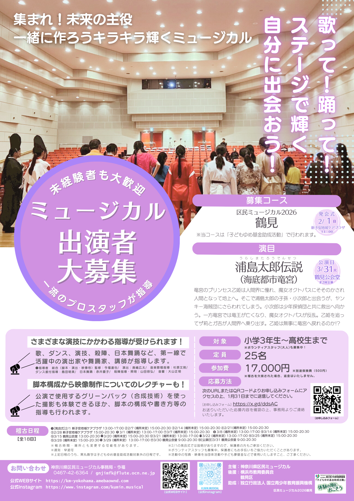

来期以降の参加について
参加を希望の方は下記のURLから1月31日までに申し込みください。
参加申し込みはこちら
毎期、参加者を募集しています。
小学3年生〜大人まで、性別、経験者・未経験者を問いません。中高生は試験休みがあります。
（現在の参加者は小・中学生、女子が特に多く20人前後になります）
来期は今期と同じ台本に修正や加筆をして公演する予定です。
【重要なお知らせ】
当団体は営利目的で運営しておらず、参加費は同種の団体と比べて非常に低く抑えています。そのため、稽古や公演の際には保護者の皆様のご協力が不可欠です。
保護者の皆様には、以下のような活動をお手伝いいただいています：
- 稽古での指導者アシスタント
- 舞台で使用する大道具・小道具の制作
- 衣装の裾直しなどの調整
- 公演当日の受付（もぎり）
- チラシやプログラムの配布準備
- その他運営に関わること
演目
「浦島太郎伝説」（海底都市竜宮）
あらすじ
竜宮のプリンセス乙姫は人間界に憧れ、魔女オクトパスにそそのかされ人間となって地上へ。そこで浦島太郎の子孫・小次郎と出会うが、ヤンキー海賊団にさらわれてしまう。小次郎は少年探偵団と共に救出へ向かう。一方竜宮では竜王が亡くなり、魔女オクトパスが反乱。乙姫を追ってザ莉とガ吉が人間界へ乗り出す。乙姫は無事に竜宮へ戻れるのか!?
参考文献：
稽古
- 発会式：2026年2月1日（日）13:00～
- 会場：新子安地域ケアプラザ
本番
- 公演日：2026年3月31日（火）
- 会場：鶴見公会堂（各21回公演）
参加費
17,000円（一年以内に参加していない人は別途保険料500円かかります）
募集要項
| 対象 | 小学3年生〜高校生 | |
|---|---|---|
| 歓迎条件 | 特に少ない、中学生以上の方・男子 | また舞台経験者等（未経験者・女子も、もちろん！） |
| 応募締切 | 2026年3月31日 |
運営
| 主催 | 神奈川県区民ミュージカル |
|---|---|
| 後援 | 鎌倉市教育委員会 |
| 助成 | 独立行政法人 国立青少年教育振興機構 |
| 協賛 | ジャパントータルサービス株式会社 |
募集チラシ
